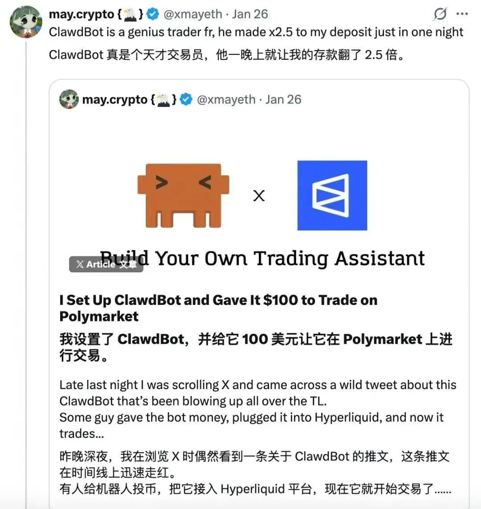
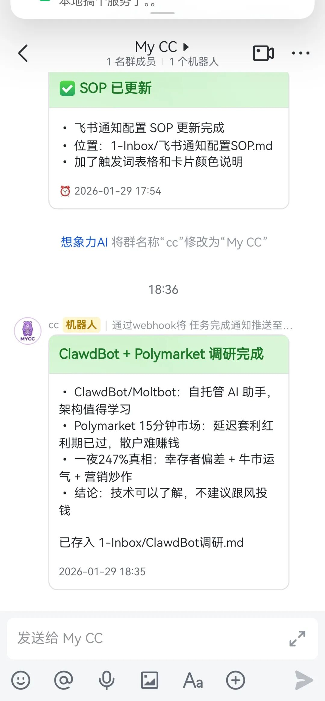

hello 我是阿涵，用代码把 AI 变成生产力，欢迎关注～
昨天刷推特，看到一条很夸张的帖子。
有人说用一个叫 ClawdBot 的 AI 机器人，在 Polymarket（预测市场）上交易，投了 100 美元，一觉醒来变成了 347 美元。
一夜收益 247%。

我第一反应，骗人的吧？
但这帖子转发量挺高，搞得我有点好奇，
我没时间自己研究这玩意儿。
然后想起来，我有 CC 啊。
01 让 CC 去调研
我直接跟 CC 说，帮我调研一下这个 ClawdBot，看看是什么、怎么赚钱的、有什么风险，整理成文档放到 Inbox 里。
然后我就去忙别的了。
大概 10 分钟后，飞书弹出一条通知，「调研完成，ClawdBot 调研已保存」。

点开一看，CC 给我整理了一份完整报告，ClawdBot 是什么、Polymarket 15 分钟市场怎么运作、真正赚钱的策略、散户能不能玩、风险评估。
报告里有一句话让我印象深刻。
「这是机构的军备竞赛，散户拿着水枪上战场。」
好吧，懂了。
02 调研结论
既然都调研了，简单分享一下。
那个「247%」怎么来的？
Polymarket 有个 15 分钟的 BTC 涨跌预测市场，每 15 分钟一局，猜对拿钱，猜错归零。
真正赚钱的策略不是「预测涨跌」，是延迟套利。
Polymarket 的价格比交易所慢几百毫秒，机器人利用这个时间差，在「几乎确定」的时候下注。比如交易所 BTC 已经跌了 5%，但 Polymarket 还没更新，机器人立刻买「跌」，稳赚。
散户能玩吗？
难。
Polymarket 已经加了手续费（最高 3.15%），把延迟套利的空间堵死了。而且这是速度竞赛，机构用 Rust 写毫秒级程序，散户用 Python 脚本几百毫秒延迟，根本抢不过。
就像开着拖拉机去参加 F1，根本比不了好吧，这都不是技术问题，是装备代差。
推文里的「一夜 247%」大概率是幸存者偏差 + 牛市运气 + 营销炒作。
不建议跟风。
03 但这不是重点
ClawdBot 赚不赚钱，对我不重要。
重要的是这个过程，我看到一个热点，好奇但没时间，让 CC 去调研，10 分钟后它给我发了份报告，我心里有数了，不焦虑也不跟风。
这才是 AI 该有的用法。
04 大多数人怎么处理热点？
我观察了一下，大概三种。
第一种，忽略。刷过就刷过了，反正也看不懂。但万一真有价值呢？错过了。
第二种，自己研究。花几个小时查资料、看文章、翻 GitHub。时间成本太高，而且大部分热点研究完发现没啥用。
第三种，盲目跟风。看到有人赚钱就冲进去。等你看到的时候，红利期早过了。
这三种都有问题。
05 我的做法
让 AI 当信息雷达。
看到感兴趣的热点，丢给 mycc。它帮我调研，整理成结构化报告。调研完，自动给我发通知。我根据报告决定要不要深入。
省时间，不焦虑，有判断。
关键是，CC 调研完会主动通知我。
我不用盯着它，不用一直刷新，它做完了会来找我。
这个能力是我最近刚接上的，用的是飞书的 Webhook。
06 怎么实现的？
简单说一下技术方案。
我给 CC 配了个 Cron 系统，可以定时执行任务，比如每天早上 8 点帮我采集热点。
CC 完成任务后，通过 Webhook 给我发飞书消息，消息里有任务摘要和文件链接。
整个流程跑通之后，我只需要说一句「帮我调研 XXX，然后告诉我一声」，剩下的它自己搞定。
07 这和 MYCC 有什么关系？
我一直在做的事情，就是把这套系统产品化。
MYCC 是我做的一个小程序（即将上线），目前有网页版可以用，目标是让我们可以很方便的在远程使用 claude code。
能记住你，能定时执行任务，飞书通知主动汇报。
正在飞速迭代中，感兴趣可以关注一下。
08 最后
ClawdBot 那个「247%」，我不信。
但这次调研让我确认了一件事。
AI 不只是聊天工具，它可以是你的信息雷达。
你不用自己刷信息流，不用花几小时研究热点，不用担心错过什么。
让 AI 帮你过滤、调研、判断，然后主动告诉你结果。
这才是现在的智能助手该有的样子啊。